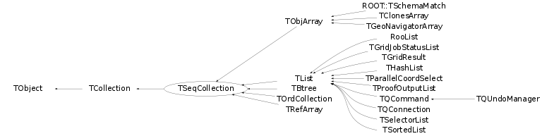

class TSeqCollection: public TCollection
TSeqCollection Sequenceable collection abstract base class. TSeqCollection's have an ordering relation, i.e. there is a first and last element.
Function Members (Methods)
This is an abstract class, constructors will not be documented.
Look at the header to check for available constructors.
public:
| virtual | ~TSeqCollection() |
| void | TObject::AbstractMethod(const char* method) const |
| virtual void | Add(TObject* obj) |
| virtual void | AddAfter(const TObject* after, TObject* obj) |
| virtual void | TCollection::AddAll(const TCollection* col) |
| virtual void | AddAt(TObject* obj, Int_t idx) |
| virtual void | AddBefore(const TObject* before, TObject* obj) |
| virtual void | AddFirst(TObject* obj) |
| virtual void | AddLast(TObject* obj) |
| void | TCollection::AddVector(TObject* obj1) |
| virtual TObject* | After(const TObject* obj) const |
| virtual void | TObject::AppendPad(Option_t* option = "") |
| Bool_t | TCollection::AssertClass(TClass* cl) const |
| virtual TObject* | At(Int_t idx) const |
| virtual TObject* | Before(const TObject* obj) const |
| virtual void | TCollection::Browse(TBrowser* b) |
| Int_t | TCollection::Capacity() const |
| static TClass* | Class() |
| virtual const char* | TObject::ClassName() const |
| virtual void | TCollection::Clear(Option_t* option = "") |
| virtual TObject* | TCollection::Clone(const char* newname = "") const |
| virtual Int_t | TCollection::Compare(const TObject* obj) const |
| Bool_t | TCollection::Contains(const char* name) const |
| Bool_t | TCollection::Contains(const TObject* obj) const |
| virtual void | TObject::Copy(TObject& object) const |
| virtual void | TCollection::Delete(Option_t* option = "") |
| virtual Int_t | TObject::DistancetoPrimitive(Int_t px, Int_t py) |
| virtual void | TCollection::Draw(Option_t* option = "") |
| virtual void | TObject::DrawClass() constMENU |
| virtual TObject* | TObject::DrawClone(Option_t* option = "") constMENU |
| virtual void | TCollection::Dump() const |
| static void | TCollection::EmptyGarbageCollection() |
| virtual void | TObject::Error(const char* method, const char* msgfmt) const |
| virtual void | TObject::Execute(const char* method, const char* params, Int_t* error = 0) |
| virtual void | TObject::Execute(TMethod* method, TObjArray* params, Int_t* error = 0) |
| virtual void | TObject::ExecuteEvent(Int_t event, Int_t px, Int_t py) |
| virtual void | TObject::Fatal(const char* method, const char* msgfmt) const |
| virtual TObject* | TCollection::FindObject(const char* name) const |
| virtual TObject* | TCollection::FindObject(const TObject* obj) const |
| virtual TObject* | First() const |
| static void | TCollection::GarbageCollect(TObject* obj) |
| static TCollection* | TCollection::GetCurrentCollection() |
| virtual Option_t* | TObject::GetDrawOption() const |
| static Long_t | TObject::GetDtorOnly() |
| virtual Int_t | TCollection::GetEntries() const |
| virtual const char* | TObject::GetIconName() const |
| virtual Int_t | GetLast() const |
| virtual const char* | TCollection::GetName() const |
| virtual char* | TObject::GetObjectInfo(Int_t px, Int_t py) const |
| virtual TObject** | TCollection::GetObjectRef(const TObject* obj) const |
| static Bool_t | TObject::GetObjectStat() |
| virtual Option_t* | TObject::GetOption() const |
| virtual Int_t | TCollection::GetSize() const |
| virtual const char* | TObject::GetTitle() const |
| virtual UInt_t | TObject::GetUniqueID() const |
| virtual Int_t | TCollection::GrowBy(Int_t delta) const |
| virtual Bool_t | TObject::HandleTimer(TTimer* timer) |
| virtual ULong_t | TCollection::Hash() const |
| virtual Int_t | IndexOf(const TObject* obj) const |
| virtual void | TObject::Info(const char* method, const char* msgfmt) const |
| virtual Bool_t | TObject::InheritsFrom(const char* classname) const |
| virtual Bool_t | TObject::InheritsFrom(const TClass* cl) const |
| virtual void | TObject::Inspect() constMENU |
| void | TObject::InvertBit(UInt_t f) |
| virtual TClass* | IsA() const |
| Bool_t | TCollection::IsArgNull(const char* where, const TObject* obj) const |
| virtual Bool_t | TCollection::IsEmpty() const |
| virtual Bool_t | TObject::IsEqual(const TObject* obj) const |
| virtual Bool_t | TCollection::IsFolder() const |
| Bool_t | TObject::IsOnHeap() const |
| Bool_t | TCollection::IsOwner() const |
| virtual Bool_t | TCollection::IsSortable() const |
| virtual Bool_t | IsSorted() const |
| Bool_t | TObject::IsZombie() const |
| virtual TObject* | Last() const |
| Int_t | LastIndex() const |
| virtual void | TCollection::ls(Option_t* option = "") const |
| virtual TIterator* | TCollection::MakeIterator(Bool_t dir = kIterForward) const |
| virtual TIterator* | TCollection::MakeReverseIterator() const |
| void | TObject::MayNotUse(const char* method) const |
| Long64_t | Merge(TCollection* list) |
| virtual Bool_t | TObject::Notify() |
| static Int_t | ObjCompare(TObject* a, TObject* b) |
| void | TObject::Obsolete(const char* method, const char* asOfVers, const char* removedFromVers) const |
| static void | TObject::operator delete(void* ptr) |
| static void | TObject::operator delete(void* ptr, void* vp) |
| static void | TObject::operator delete[](void* ptr) |
| static void | TObject::operator delete[](void* ptr, void* vp) |
| void* | TObject::operator new(size_t sz) |
| void* | TObject::operator new(size_t sz, void* vp) |
| void* | TObject::operator new[](size_t sz) |
| void* | TObject::operator new[](size_t sz, void* vp) |
| TObject* | TCollection::operator()(const char* name) const |
| TObject& | TObject::operator=(const TObject& rhs) |
| virtual void | TCollection::Paint(Option_t* option = "") |
| virtual void | TObject::Pop() |
| virtual void | TCollection::Print(Option_t* option = "") const |
| virtual void | TCollection::Print(Option_t* option, Int_t recurse) const |
| virtual void | TCollection::Print(Option_t* option, const char* wildcard, Int_t recurse = 1) const |
| virtual void | TCollection::Print(Option_t* option, TPRegexp& regexp, Int_t recurse = 1) const |
| static void | QSort(TObject** a, Int_t first, Int_t last) |
| static void | QSort(TObject** a, TObject** b, Int_t first, Int_t last) |
| static void | QSort(TObject** a, Int_t nBs, TObject*** b, Int_t first, Int_t last) |
| virtual Int_t | TObject::Read(const char* name) |
| virtual void | TCollection::RecursiveRemove(TObject* obj) |
| virtual TObject* | TCollection::Remove(TObject* obj) |
| virtual void | RemoveAfter(TObject* after) |
| void | TCollection::RemoveAll() |
| virtual void | TCollection::RemoveAll(TCollection* col) |
| virtual TObject* | RemoveAt(Int_t idx) |
| virtual void | RemoveBefore(TObject* before) |
| virtual void | RemoveFirst() |
| virtual void | RemoveLast() |
| void | TObject::ResetBit(UInt_t f) |
| virtual void | TObject::SaveAs(const char* filename = "", Option_t* option = "") constMENU |
| virtual void | TObject::SavePrimitive(ostream& out, Option_t* option = "") |
| void | TObject::SetBit(UInt_t f) |
| void | TObject::SetBit(UInt_t f, Bool_t set) |
| void | TCollection::SetCurrentCollection() |
| virtual void | TObject::SetDrawOption(Option_t* option = "")MENU |
| static void | TObject::SetDtorOnly(void* obj) |
| void | TCollection::SetName(const char* name) |
| static void | TObject::SetObjectStat(Bool_t stat) |
| virtual void | TCollection::SetOwner(Bool_t enable = kTRUE) |
| virtual void | TObject::SetUniqueID(UInt_t uid) |
| virtual void | ShowMembers(TMemberInspector& insp) |
| static void | TCollection::StartGarbageCollection() |
| virtual void | Streamer(TBuffer& b) |
| void | StreamerNVirtual(TBuffer& b) |
| virtual void | TObject::SysError(const char* method, const char* msgfmt) const |
| Bool_t | TObject::TestBit(UInt_t f) const |
| Int_t | TObject::TestBits(UInt_t f) const |
| void | UnSort() |
| virtual void | TObject::UseCurrentStyle() |
| virtual void | TObject::Warning(const char* method, const char* msgfmt) const |
| virtual Int_t | TCollection::Write(const char* name = 0, Int_t option = 0, Int_t bufsize = 0) |
| virtual Int_t | TCollection::Write(const char* name = 0, Int_t option = 0, Int_t bufsize = 0) const |
protected:
| virtual void | Changed() |
| virtual void | TObject::DoError(int level, const char* location, const char* fmt, va_list va) const |
| virtual const char* | TCollection::GetCollectionEntryName(TObject* entry) const |
| void | TObject::MakeZombie() |
| virtual void | TCollection::PrintCollectionEntry(TObject* entry, Option_t* option, Int_t recurse) const |
| virtual void | TCollection::PrintCollectionHeader(Option_t* option) const |
Data Members
public:
| enum TCollection::[unnamed] { | kIsOwner | |
| kInitCapacity | ||
| kInitHashTableCapacity | ||
| }; | ||
| enum TObject::EStatusBits { | kCanDelete | |
| kMustCleanup | ||
| kObjInCanvas | ||
| kIsReferenced | ||
| kHasUUID | ||
| kCannotPick | ||
| kNoContextMenu | ||
| kInvalidObject | ||
| }; | ||
| enum TObject::[unnamed] { | kIsOnHeap | |
| kNotDeleted | ||
| kZombie | ||
| kBitMask | ||
| kSingleKey | ||
| kOverwrite | ||
| kWriteDelete | ||
| }; |
protected:
| TString | TCollection::fName | name of the collection |
| Int_t | TCollection::fSize | number of elements in collection |
| Bool_t | fSorted | true if collection has been sorted |
Class Charts
{kind=link}
{kind=link}
{kind=link}
{kind=link}

Function documentation
Int_t IndexOf(const TObject* obj) const
Return index of object in collection. Returns -1 when object not found. Uses member IsEqual() to find object.
Int_t GetLast() const
Returns index of last object in collection. Returns -1 when no objects in collection.
Int_t ObjCompare(TObject* a, TObject* b)
void QSort(TObject** a, Int_t first, Int_t last)
Sort array of TObject pointers using a quicksort algorithm. The algorithm used is a non stable sort (i.e. already sorted elements might switch/change places). Uses ObjCompare() to compare objects.
void QSort(TObject** a, Int_t nBs, TObject*** b, Int_t first, Int_t last)
Sort array a of TObject pointers using a quicksort algorithm. Arrays b will be sorted just like a (a determines the sort). Argument nBs is the number of TObject** arrays in b. The algorithm used is a non stable sort (i.e. already sorted elements might switch/change places). Uses ObjCompare() to compare objects.
Long64_t Merge(TCollection* list)
Merge this collection with all collections coming in the input list. The input list must contain other collections of objects compatible with the ones in this collection and ordered in the same manner. For example, if this collection contains a TH1 object and a tree, all collections in the input list have to contain a histogram and a tree. In case the list contains collections, the objects in the input lists must also be collections with the same structure and number of objects. The objects inside the collection do not have a Merge function (like TObjString) rather than being merged all the instances are appended to the output. Example this list ____________ ---------------------| | A (TH1F) | __________ | L1 (TSeqCollection)|- [A1, B1(C1,D1,E1)] | B (TList)|-| C (TTree)| | L1 (TSeqCollection)|- [A2, B2(C2,D2,E2)] |__________| | D (TH1F) | | ... |- [...] | E (TH1F) | |____________________| |__________|